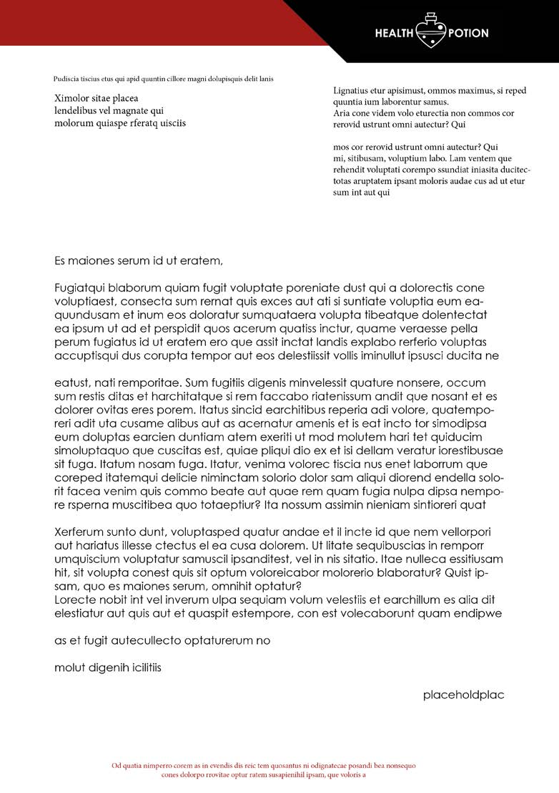
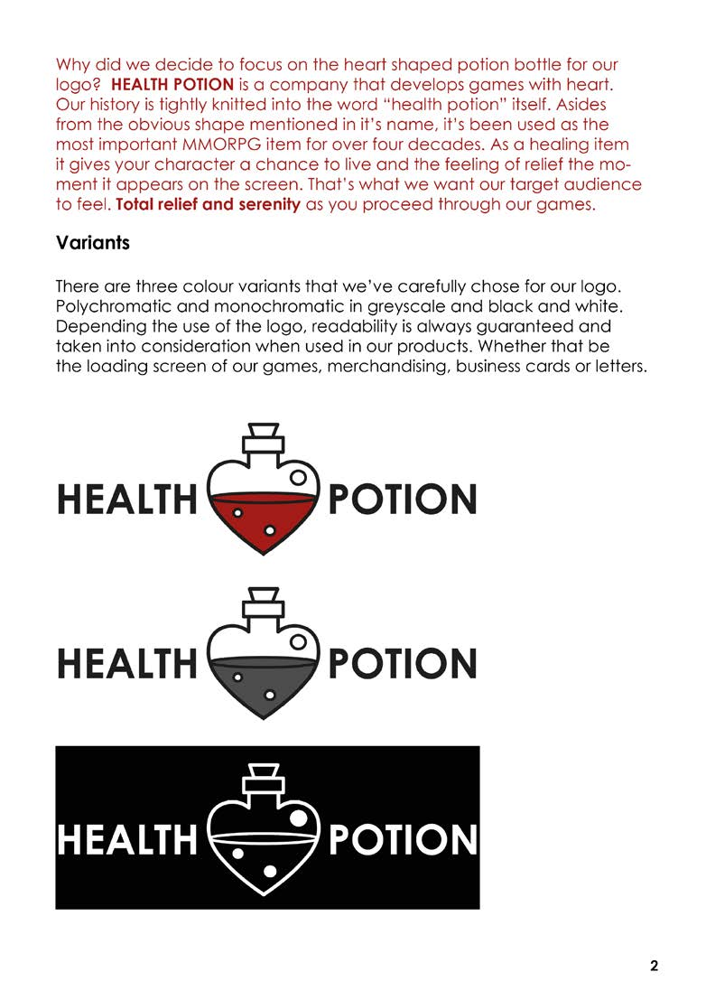
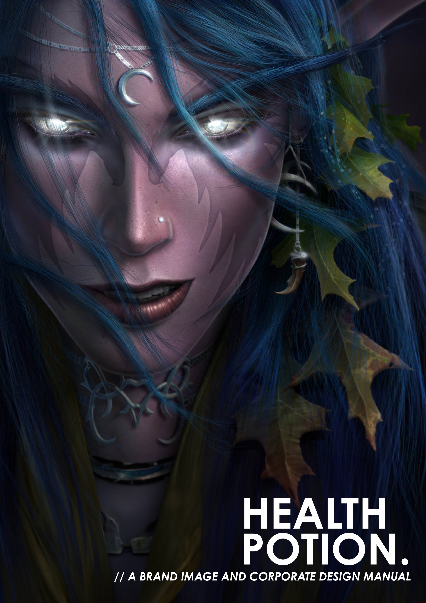
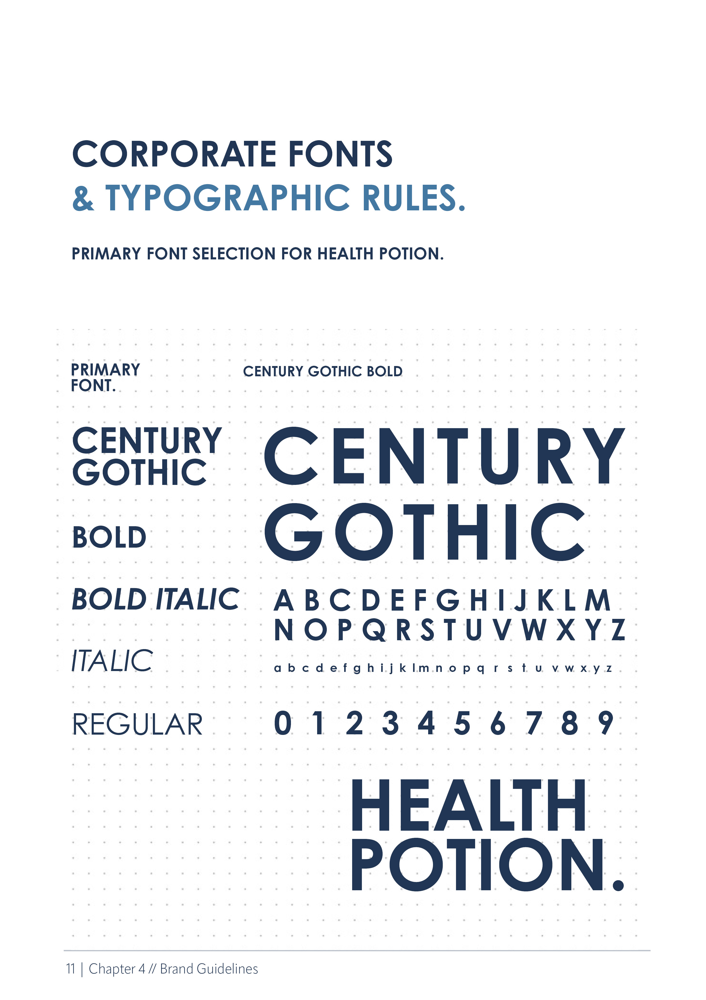
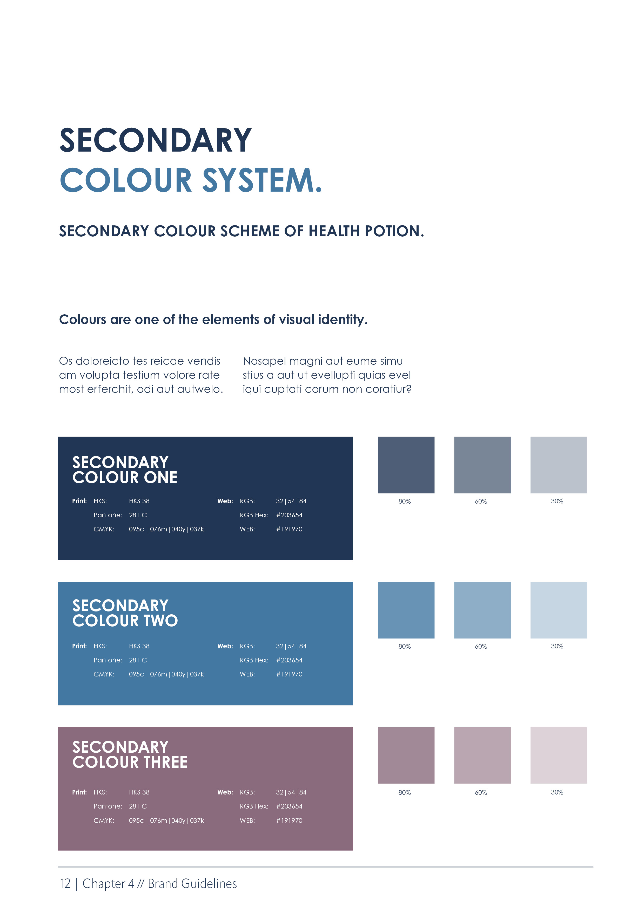

Concept & design system
A fictional studio
with a real identity
The concept borrows from MMORPG culture - specifically the health potion, one of the most universally recognised game items. The studio identity needed to balance playfulness with professionalism: a brand that could sit in the gaming industry without looking like it was trying too hard.
The primary typeface is Century Gothic Bold - a modern grotesque with geometry that references both digital culture and corporate credibility. It's paired across the manual with HKS and Pantone shades to ensure consistency across print and digital applications.
The 2024
revisit
Returning to this project two years later was a deliberate exercise in measuring growth. The decisions I'd made in 2022 - the font choice, the secondary colour system, the layout approach - held up better than expected, but the 2024 version shows tighter colour harmony, more considered typographic hierarchy, and better application consistency.
The manual demonstrates hierarchy, spacing, and brand application through the cover and internal spread design - a complete set of guidelines a real studio could hand to a printer or developer.





